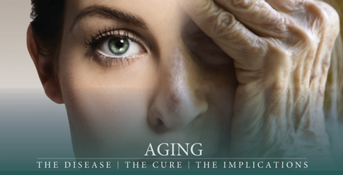

-
WHO ARE OUR PATIENTS?
Our patients tend to be highly educated in nutrition and the new approaches to holistic health. They recognize, as we do, that the body and mind are connected and both must be healthy for the whole body to enjoy optimal health. The best way, to ensure that, is to balance the body energy. The holistic approach to health is to enhance the physical, mental, emotional and spiritual health.
-

ANTI-AGING PROGRAM
Healthy aging is now a reality. Patients are evaluated for signs of aging that are associated with hormone decline and the aging process. Signs and symptoms such as short-term memory impairment, hair loss, muscle loss. Poor circulations, loss of libido are some examples.Thorough evaluation includes assessment of hormone levels and deficiencies. Natural hormone replacement therapy is safe and individualized to the patient condition for both women and men. This restores the normal hormone levels that enhance overall health. In addition, energy medicine and informational medicine provide biofeedback modalities that helps to balance the body energy.
-
CHELATION THERAPY
Chelation Therapy is one of the modalities provided as part of the Multi-Modality Immune-therapy Program (M IP). It is a safe. effective way of removing toxins such as heavy metals and metastatic calcium deposits from the human body. This helps to balance of other metal ions and restores healthy cellular functions, disintegrates the plaques in arterioscleroses and thus improves blood circulation as well as the circulation to all body organs. Consequently, this leads to improved body functions, e.g.. it relieves angina pectoris; lower blood cholesterol and fats, reduces blood pressure; reduces heart irritability; improves signs of aging; heals poor circulation ulcers (such as leg ulcers); reduces leg cramps: improves vision; improves varicose veins and pigmentation.Chelation is a series of intravenous infusions of an amino acid called Calcium EDTA (Calcium Disodium Edetate), with mega-doses of vitamins and minerals.Chelation Therapy improves a patient's condition in a variety of chronic diseases such as Coronary Arterioscleroses; Psoriasis: Arthritis; Parkinson's Disease: Lead and Other Heavy Metal Toxicity: Peripheral Vascular Disease: Hypoglycemia; Lupus; Diabetic Complications; Arteriosclerosis and many and others.
-
WHAT SERVICES DO WE OFFER?
We believe in treating the whole patient, not just the symptoms of the disease.Also treating the underlying reasons &causes of the disease. Our philosophy is preventive health care with emphasis on the physical, emotional, and mental fitness. Therefore, after an in-depth analysis of body functions, holistic health may he achieved through a Multi-modality Immuno-therapy Program (MIP). MIP offers comprehensive program for diagnosis and medical care with special emphasis on preventive medicine and natural approaches. MIP may include any combination of the following:
Nutrition and diet counseling
Lifestyle changes
Women's Health
Conventional medicine
Chelation therapy
I.V. infusions
Stress management
Pain management
Bio-oxidation therapy
Osteoporosis prevention and treatment
Immune system support
Supplements with vitamins, minerals &enzymes
Body detoxification
Weight management
Physical exercise
Anti-Aging & natural hormone replacement therapy
Energy Medicine.
-
HOW WE BECOME HEALTHY?
In our practice , achieving health is by preventing the disease and restoring the energy balance of the body to heal itself. Our holistic approach to health is by recognizing, identifying, and treating the underlying imbalances which form the cause and reasons for the disease. Also, by implementing a comprehensive, individualized approach for a self-healing program. At our medical practice, some of the many clinical conditions addressed include:
Chronic Fatigue Syndrome
Fibromyalgia
Cardiovascular Disease
Hypertension
Adjunctive support for Cancer
Allergy
Diabetes or Hypoglycemia
Obesity
Arthritis
Back Pain
Chronic Pain
Depression or Anxiety
Diarrhea or Constipation
Lupus, Rheumatoid Arthritis or Autoimmune Diseases
PMS or Menopausal Symptoms
Frequent Colds
Heavy Metal Toxicity
Chemical Exposure
Allergy and Multiple Chemical Sensitivities
Hepatitis
Osteoporosis
Alzheimer's Disease
Premature Aging